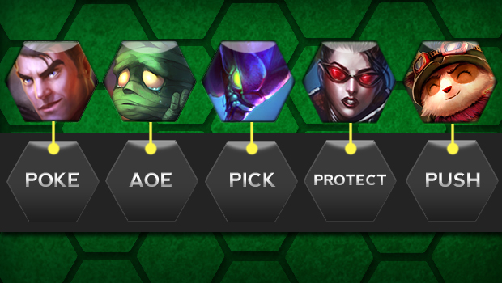
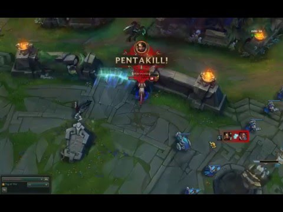
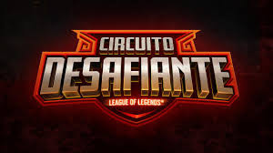

Três Dicas para o Clash
E aí galera, Hoje recebemos a maravilhosa notícia de que o Clash está voltando. Par tal, antes do modo voltar todos os servidores passarão por um novo teste. Desta vez o pessoal da Riot Games tomou as devidas providências para que não ocorra o mesmo fiasco da última vez. A nova data anunciada para o teste é a de formação das equipes no dia 29 de Outubro (a partir das 8hs) e as partidas na quarta-feira dia 31 de Outubro (a partir das 20hs). Como este era um dos modos mais aguardados pelos jogadores, resolvi criar esta postagem para dar 3 dicas para o Clash. Confira abaixo então as dicas selecionadas.
Composição
É muito provável que antes de jogar o modo do Clash você e seus companheiros de equipes já tenham jogado o modo Ranqueado Flexível. Porém, é também provável que vocês foram decidindo seus campeões conforme os picks e bans iam se mostrando. Ou seja, vocês não pensaram antes de entrar na fila com o que iriam jogar. O modo Clash é parecido odo Flex, no sentido de que uma equipe pode jogar em um jogo mais competitivo contra outra, mas é muito diferente em outros quesitos. Na hora de jogar o Clash então, pense que neste modo vocês devem jogar como uma equipe e não como um grupo de jogadores que se encontraram na SoloQ.
Antes de jogar converse com seus amigos e decidam com qual composição vocês querem jogar. Querem pickar Sion Top e Zilean Mid, com um ADC de escalonamento? Então muito provável que vocês queiram jogar para uma composição de Protect the Carry (Proteja o ADC) com um bom engage para lutas. Querem jogar com uma composição boa para levar torres? Pode ser uma Tristana ADC, um Ziggs Mid e um Veigar suporte, para montar uma composição de Siege (Cerco). Existem também a composição que prioriza lutas. e caso um Amumu Jungle, um Malphite top e um Jhin são ótimos para forçar o time rival a lutar. A primeira dica então é essa, pensem com qual composição vocês querem jogar ao invés de pegarem campeões aleatórios.
Bans Importam
Sabe aquela famosa piadinha que é só esquivar das Lanças da Nidalee que ela se torna inútil? Então, no conceito da cabeça de um mal jogador, qualquer skillshot (habilidade que precisa ser mirada) pode ser esquivado e portanto um bom jogador vai escapar de todas. Só que isto nunca acontece. A não ser que você tenha a habilidade de ver 2 segundos no futuro, você não vai conseguir escapar de todas as habilidades que foram lançadas em sua direção. Então esse papo de que determinado campeão não precisa ser banido foi é "fácil" de ser counterado é papo de mal jogador.
Assim, se você sabe que no time adversário tem um jogador main Nidalee que tem taxa de vitória de 70% com a campeã, não vá achando que só porque você desviou a vida inteira das lanças de outras Nidalees que você vai desviar das lanças da Nidalee deste jogador. Claro que isto é considerando o número de jogos também. Se o outro jogador jogou 200 jogos de Amumu com um taxa de vitória de 62% e só 4 jogos de Nidalee, com uma taxa de vitória de 75%, você não vai ser sem noção de banir a Nidalee né? O ponto importante a se constatar é que se neste modo você pode ver quais são os melhore campeões de seus adversários, bana ele! Não vai banir os campeões de ban de sempre só porque contra os outros campeões você consegue lidar.
Isto Não é o Circuitão
Quem nunca sonhou em ser um jogador profissional né? Ganhar dinheiro fazendo aquilo que ama, jogar League of Legends, parece mesmo um sonho. Então quando você jogar este novo modo de combate entre equipes, é possível que você encare como uma oportunidade para mostrar todo seu potencial para estar em uma equipe profissional. Então você entra no jogo pronto pra carregar com sua Vayne cabulosa e fazer seu nome. O problema é que seu Top está tendo um mal jogo e começou a partida 0/2, enquanto o jungler inimigo gankou o bot e fez um double kill em você e seu suporte. É nesta hora que você começa a xingar seu time de tudo quanto é nome. Afinal, essa era a sua oportunidade de mostrar para o mundo que você merece estar jogando pela Flamengo E-Sports também!
Só que o Clash não é o Circuito Desafiante. Não tem Scouts (Olheiros) dos times olhando as partidas procurando por você. Calma. Este é um modo de jogo feito para você e seus amigos jogarem como um time contra outro time. É legal e interessante participar deste modo estilo torneio, mas se você perder, não é o fim do mundo. No final das contas, jogar o Clash não vale tanto quanto você pensa. Não é sua oportunidade de entrar para uma equipe profissional. É sua oportunidade jogar em um modo competitivo que vai favorecer as equipes que conseguem jogar melhor e mais coordenados. Então calma. Jogue o jogo ao seu próprio tempo e não desfavoreça sua equipe, beleza?
Bem, estas são minhas três dicas para você que participar do modo Clash. Eu estarei lá testando e pretendo postar aqui no fórum minha experiência com o modo (mesmo que seja apenas um jogo...). Teste o modo você também e depois volte aqui para dizer o que achou das dicas. Aproveitem bem o modo, um grande abraço e bom jogo à todos!